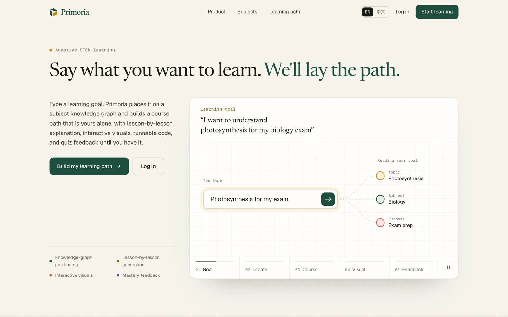
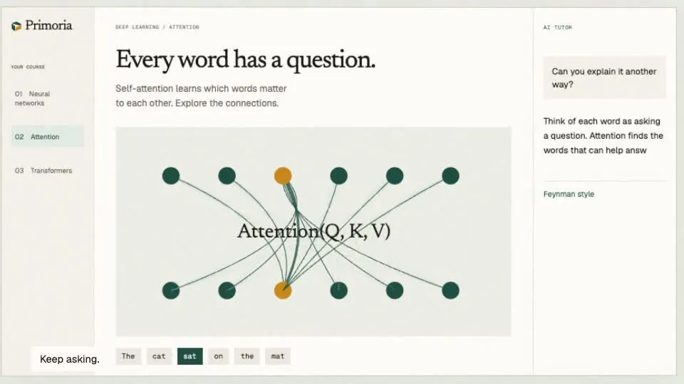
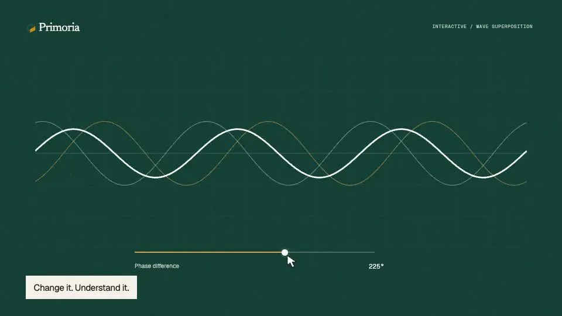
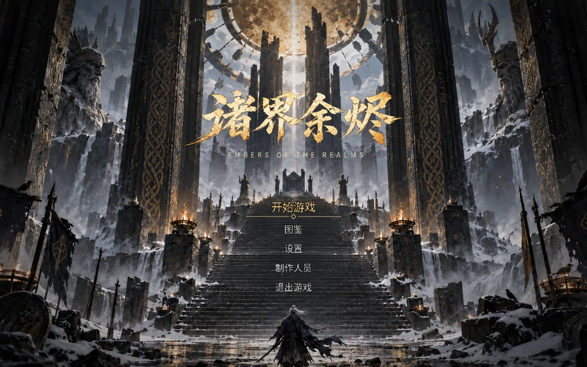
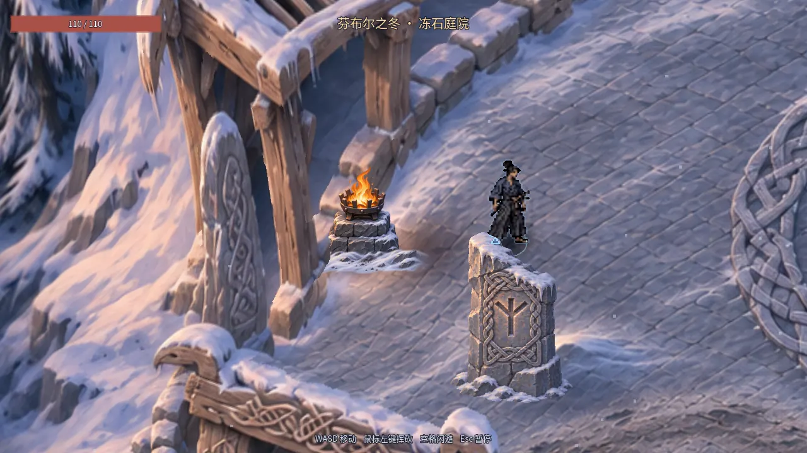

张凡 (Charles) — 作品集 2026
智能体
游戏
与故事詹姆斯库克大学新加坡校区 IT 本科生。
做 AI 智能体，做游戏，
也在用 AI 拍一部短片。
(关于)
我喜欢把难的东西做得像游戏一样好上手：一个把提问变成一堂课的 AI 导师，一款每件掉落都会改写构筑的 Roguelite。
- 学业
- 詹姆斯库克大学新加坡校区 信息技术学士 · GPA 6.17 / 7 · JCU Merit Scholarship
- 工具
- Python · TypeScript · React / Next.js · LangGraph · PostgreSQL · Godot
- 下一步
- 2027 年 1 月中下旬起可全职实习 4 个月以上 — AI 应用与 Agent 开发、全栈与后端
01 / 03 AI 学习平台 — 本科毕业项目 — 2026
Primoria
★ HackaStone 2026 全球总决赛入围 · 阿姆斯特丹
说出你想学什么，Primoria 帮你铺好学习路径。在这个团队毕业项目里，我设计了 AI 导师的架构，并实现了它的核心运行时。
- LangGraph 导师按意图调用工具；耗时的课程生成放到后台任务执行，运行状态存在 PostgreSQL。
- 对上传的课件做 BM25 + pgvector 混合检索，回答时注明出自哪个文件、哪一页。
- 模型只为 49 个可复用教学组件填写经过校验的参数，而不是整课从头生成。
TypeScript · Next.js · LangGraph · PostgreSQL · pgvector
primoria.app ↗



02 / 03 开发中的游戏 — Godot
诸界余烬Embers of the Realms
我正在用 Godot 开发的北欧神话动作 Roguelite：Hades 式的房间推进，神明祝福嵌进你的构筑，装备掉落改变打法。
- 设计装备系统：词条、套装效果，以及每件掉落如何影响祝福选择和战斗平衡。
- 搭建单局循环：房间、经验与升级选择、神明祝福和融合技能。
- 美术方向：厚涂卡面、雪原神殿场景和风格化 3D 角色。
Godot · GDScript · Blender · AI 辅助美术管线



03 / 03 AI 短片 — 制作中
大淖记事A Tale of Big Nur


改编自汪曾祺 1981 年的同名小说，用图像和视频模型制作：写实的电影质感，克制的对白，以原文作旁白。
改编 · 分镜 · 视觉定调 · 生成
(更多项目)
- Lumina给自己做的背单词与雅思练习应用Web · Android
- Conser-vision野生动物图像分类，负责数据增强与模型集成深度学习 · 2026
- 黄河流量建模用监测数据做流量建模，全国大学生数学建模竞赛省级三等奖数学建模 · Python
- 本站裂屏滚动引擎，从零手写HTML · CSS · JS
履历
下载简历 · PDF ↗教育背景
- 2025.09 — 2026.12詹姆斯库克大学新加坡校区信息技术学士 · GPA 6.17 / 7 · JCU Merit Scholarship · 预计 2026 年 12 月完成课程
- 2022.09 — 2025.02福州墨尔本理工职业学院信息技术（中外合作办学）
经历
- 2027 →寻找实习机会2027 年 1 月中下旬到岗，全职至少 4 个月，可协商延长 · AI 应用与 Agent 开发、全栈与后端
- 2025.03 — 2025.07东莞市宇航精密机械有限公司数控加工实习生（CNC 编程）· 用 CAM 软件按零件图纸生成加工程序并导入机床
荣誉
- 2026HackaStone 全球总决赛入围Primoria 团队，代表 JCU 新加坡校区
- 数学建模国赛省级三等奖全国大学生数学建模竞赛 · 黄河流量建模（团队）
- 校内C 语言竞赛第一名福州墨尔本理工职业学院
- 编程与工具
- Python · TypeScript · C · Git · React · Next.js · PostgreSQL
- AI 应用
- LangGraph · 工具调用 · RAG · 向量检索 · fastai
- 游戏与影像
- Godot · GDScript · Blender · 图像与视频生成